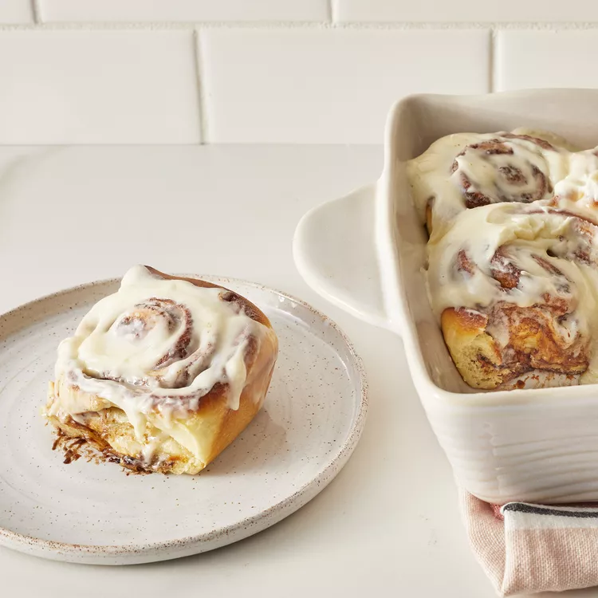

Cinnabon at home

Ingridients 🥙:
Dough:
- 1 cup warm milk (110 degrees F/45 degrees C)
- 2 eggs, room temperature
- ⅓ cup margarine, melted
- 4 ½ cups bread flour
- 1 teaspoon salt
- ½ cup white sugar
- 2 ½ teaspoons bread machine yeast
Filling:
- 1 cup brown sugar, packed
- 2 ½ tablespoons ground cinnamon
- ⅓ cup butter, softened
Icing:
- 1 ½ cups confectioners' sugar
- ¼ cup butter, softened
- 1 (3 ounce) package cream cheese, softened
- ½ teaspoon vanilla extract
- ⅛ teaspoon salt
Steps 🐾:
- Prepare dough: Place milk, eggs, margarine, flour, salt, white sugar, and yeast in the pan of a bread machine in the order recommended by the manufacturer. Select dough cycle; press Start.
- When dough has doubled in size, turn it out onto a lightly floured surface. Cover it with a kitchen towel or plastic wrap and let it rest for 10 minutes.
- Roll dough on a lightly floured surface to a 16x21-inch rectangle.
- Prepare filling: Combine brown sugar and cinnamon in a small bowl. Spread softened butter over the dough, then sprinkle cinnamon-sugar mixture evenly over top.
- Starting at the longer end, roll up the dough; cut into 12 rolls. Place rolls in a lightly greased 9x13-inch baking pan. Cover and let rise until nearly doubled, about 30 minutes.
- Meanwhile, preheat the oven to 400 degrees F (200 degrees C).
- Bake rolls in the preheated oven until golden brown, about 15 minutes.
- While rolls are baking, prepare icing: Beat confectioners' sugar, butter, cream cheese, confectioners' sugar, vanilla, and salt until creamy.
- Spread icing on warm rolls before serving.